CentOS.
1-.
empesaremos agregando una nueva ISO, la cual sera CentOS, presionamos en el apartado de nuevo, nos aparecera una ventana en donde agregaremos el documento ISO.
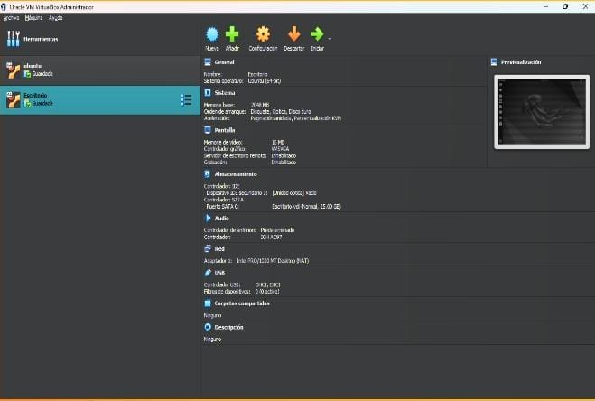
Seleccionar ISO
Una vez seleccionado la opcion "Nuevo" elegiremos el archivo que queremos ingresar, el cual sera la ISO de CentOS.
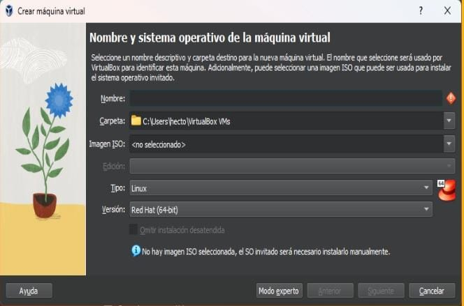
ISO seleccionada.
Una vez seleccionada la ISO procederemos a darle en "Siguiente".
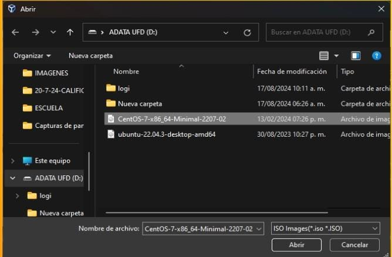
Omitir actualizaciones.
Omitiremos las actualizaciones y daremos en "Siguiente."
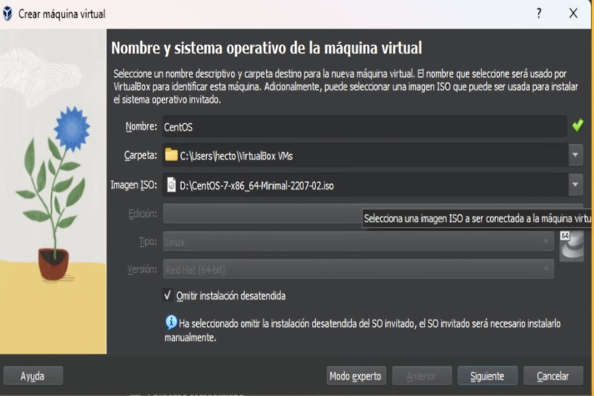
Seleccionar RAM.
Seleccionaremos la memoria RAM que nosotros consideremos, al igual que los procesadores y daremos en "Siguiente".
Seleccionar disco duro.
Ahora aqui seleccionaremos la capacidad del disco virtual.
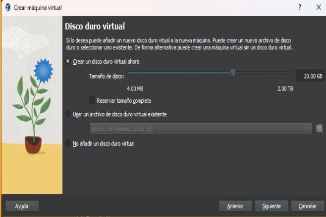
Terminar.
Daremos "Terminar" en la ventana que nos salga, solo es para verificar la configuracion que pusimos anteriormente.
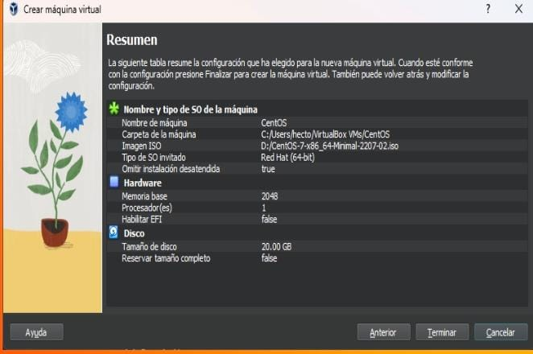
Creado.
Finalmete tendremos creado en el menu el CentOS.
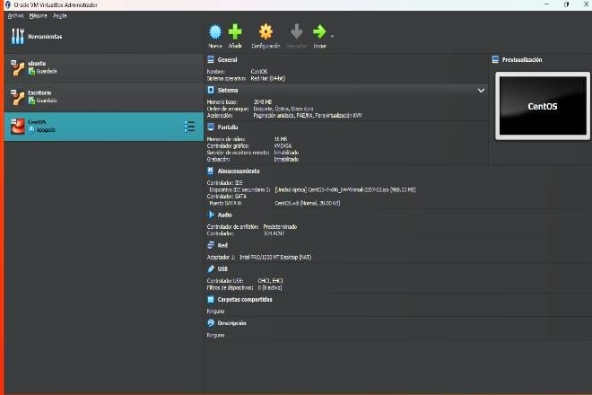
Iniciar
Daremos en el boton de iniciar, para instalar CentOS y esperaremos los segundos para que incie.
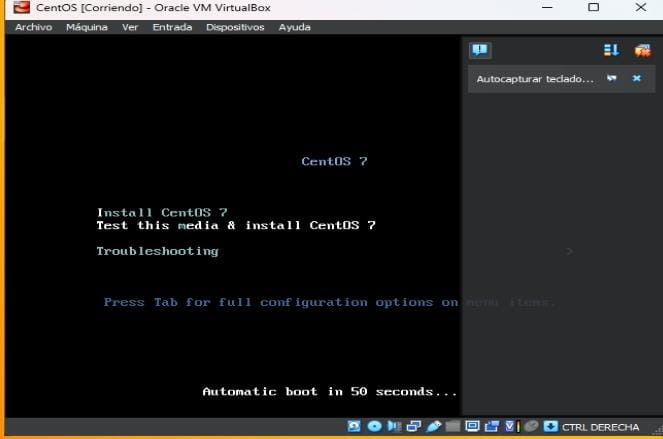
Configurar idioma.
Nos mandara a la siguiente ventana donde tendremos configurar el idioma.
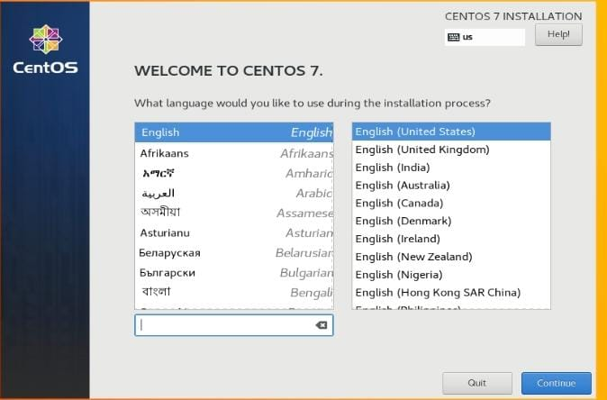
Ingresar contraseña
En esta ventana ingresaremos nuestro nombre, asi como nombre de usuario y una contraseña.
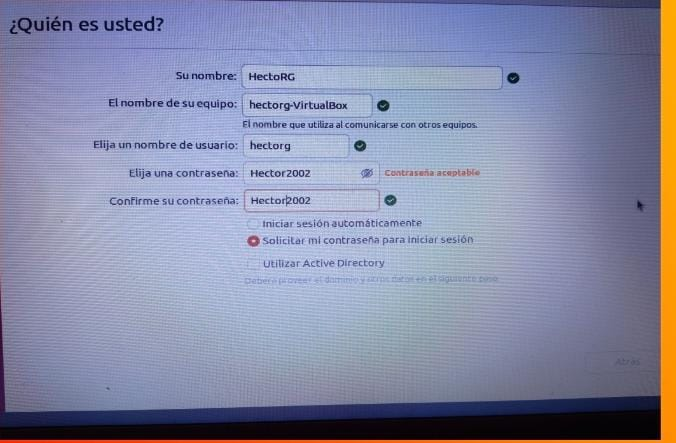
Donde instalar.
Indicaremos en donde queremos instalarlo.
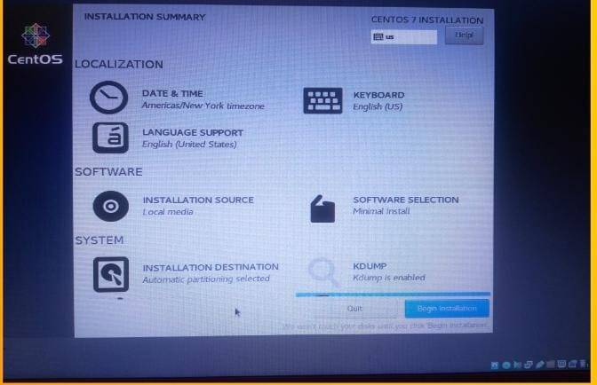
Seleccionar en donde instalaremos.
Seleccionar donde lo instalaremos.
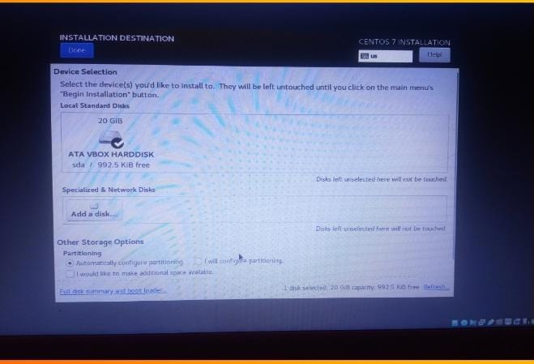
Contraseñas.
Ingresaremos una contraseña tanto de root como de creacion de usuario.
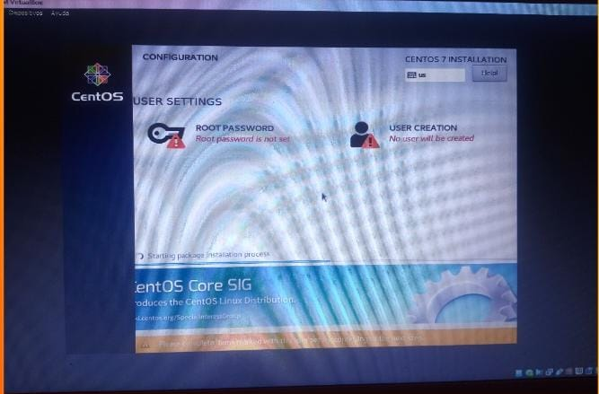
Contraseña root.
Aqui se muestra como quedaria con la contrasela.
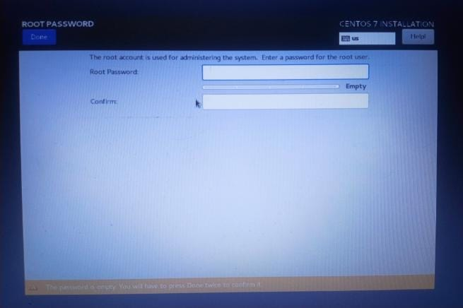
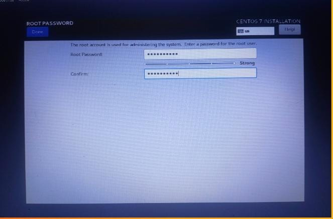
Contraseña Usuario.
Asi se veria cuando ingresemos una contraseña de usuario.
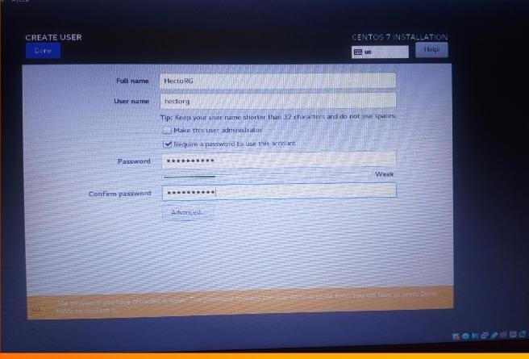
Reboot.
Una vez tengamos las contraseñas, regresaremos a la ventana a nterior, y daremos en reboot.
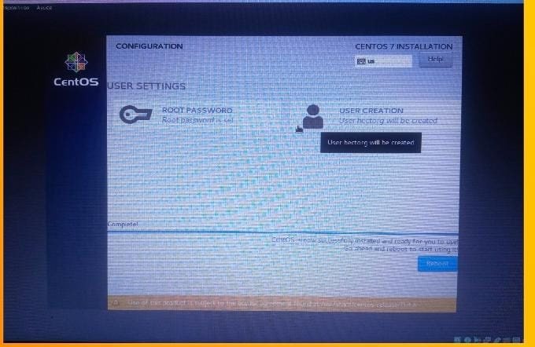
Ingresar contraseña.
Ingresaremos la contraseña que ingresamos y nos daraacceso a la instalacion.
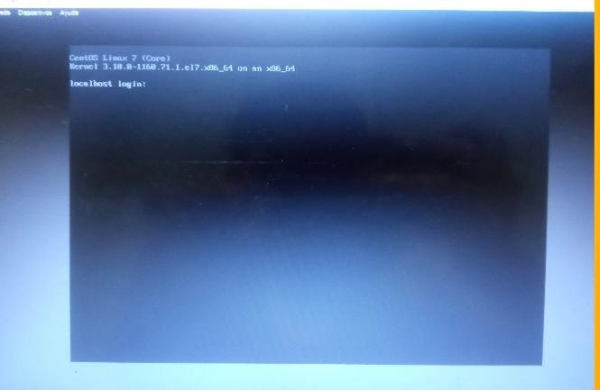
Ingresar usuario y contraseña.
Ingresaremos el usuario y contraseña para que finalmente tengamos todo al 100.
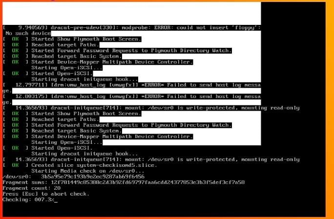